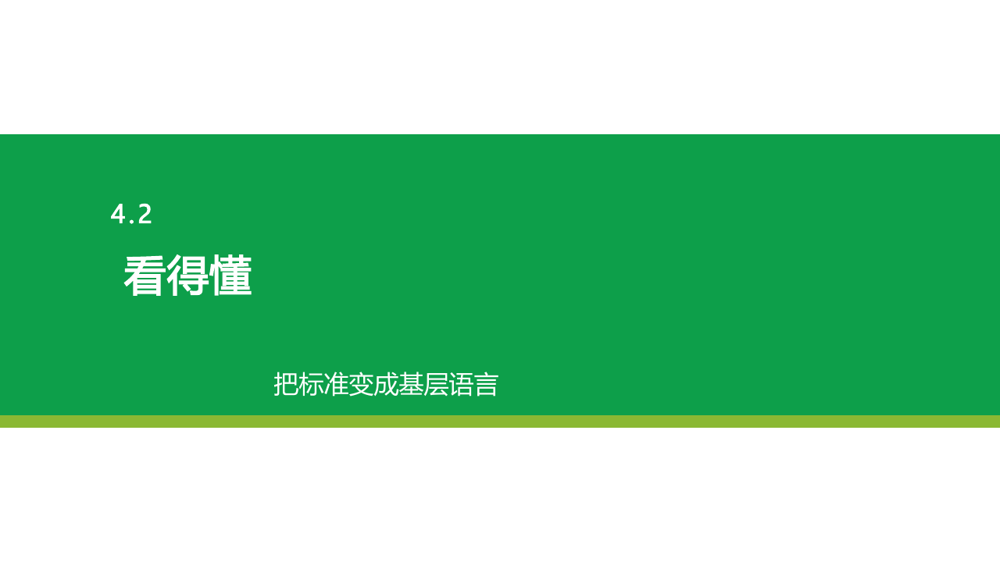
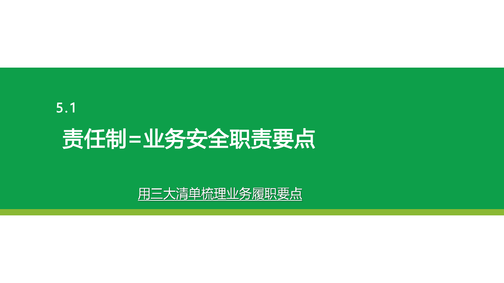

把安全责任从「安全部门」沉到「业务系统」
安全不能永远是安全部门在催、在盯、在补课。课程让业务管理者成为安全责任的承接者与推动者，体系才能自己转起来，而不是靠一个部门孤军奋战。
普通安全培训的目标，是让学员听懂、记住就结束——回到现场往往还是「原样」。这门课不止于「会」：先讲清底层方法，让管理者真正理解风险为什么反复发生；再在课堂上反复练会关键判断与动作；然后针对本企业真实风险，现场识别问题、策划出一份可落地的初步方案。学完当天，学员就带着识别出的问题和方案回现场直接开干，而不是「回去再想想」。
企业每年在制度、培训、检查、数字化上投入大量资源，但真正决定事故是否发生的，是现场最真实的那一刻——而那一刻，不由总部决定，由管理者为一线设计的「条件」决定。这门课不是再给企业加一层安全培训，而是给一套让已有安全投入真正转化为一线行为的方法：把安全责任沉到业务、把风险变成能被看见和推动的系统。
安全不能永远是安全部门在催、在盯、在补课。课程让业务管理者成为安全责任的承接者与推动者，体系才能自己转起来，而不是靠一个部门孤军奋战。
制度再厚、培训再多、系统再全，如果一线在最真实的那一刻没做对，投入就停在纸面。课程聚焦「让正确行为在现场真实发生」，而不是再堆一层材料。
追责让员工沉默、风险下沉，等出事才看见。课程用心理安全与系统设计，让隐患更早浮出水面，把拦截点前移到事故发生之前。
同一套安全系统，高层、中层、骨干是三个不同的控制点——缺一不可，也各拿各的钥匙。这门课让每一层都拿到自己那把。
你定的不只是安全 KPI，而是整个企业的安全范式：继续把风险压给一线，还是设计让一线做对的系统。不解决这一层，中层只能靠吼靠盯，骨干只能被动背锅。这门课帮你看清——安全绩效是系统设计的结果，不是追责的结果。
流程怎么写、标准怎么定、资源怎么给、提醒怎么设——都是你设计的。你卡在「上面要结果、下面难落地」中间。这门课给你一套把安全责任翻译成本部门业务动作的工具箱，让你不再靠催、靠盯、靠补救。
压力最先到你身上，话语权却往往不在你手里。你是安全真正落地的执行者，也是最前线的风险哨兵。这门课给你识别真实风险、敢于发声、并推动出初步方案的语言与工具，让你从「背锅的人」变成「能推动解决的人」。
这些不是「会不会出事」的偶然，而是每天都在发生的隐性消耗。
怕被罚、怕得罪人、怕添乱、怕说了没用、怕背锅，真实风险在一线沉下去。
人员流动大、文化水平不一、作业复杂，标准写得很完整，现场却很难落下去。
讲得有道理，但没有练习、没有工具、没有初步方案，回到现场很快恢复原样。
责任制停留在文件和留痕上，没有变成业务节点上的履职动作和持续提醒。
业务部门觉得安全是别人的事，安全管理靠催、靠盯、靠补救，体系无法自己推动。
基层员工直接对抗现场风险，但员工是否敢说、愿做、会做、持续做，往往取决于管理者设计了什么条件。
为什么是「乘法」而不是「加法」？因为四个要素只要有一个是零——员工不敢说、不愿做、不会做，或没人提醒——整体防控效果就归零。四篇也不是四节各自独立的课，而是一条因果链：先让风险浮出水面（权利），再让人愿意贡献（意愿），接着让人会做（能力），最后让体系持续推动（提醒）。缺任何一篇，前面积累的都会慢慢流失。
员工敢报、敢停、敢求助，管理者接得住真实信息，风险才有机会浮出水面。
产出：权利与心理安全机制清单让安全贡献被看见、被认可、被回流，同时把正确行为设计得更顺手。
产出：贡献回流与减负设计卡把复杂标准翻译成基层语言，让员工现场看得懂、判得准、做得出。
产出：岗位风险能力工具包把责任制变成业务安全职责要点，再进入管理计划、频次和系统提醒。
产出：业务节点提醒地图课程围绕每个关键知识点设计练习，让学员把本企业真实问题放进课堂，在讨论、判断、改写、策划和点评中形成可继续落地的初步方案。
先讲清问题为什么存在。
优先使用客户提前收集的问题。
讨论、判断、改写、策划。
把分散观点收束成方法。
形成清单、卡片或工具包。
带回现场继续完善和推动。
这门课不是在给基层员工提要求，而是在给管理者提要求。管理者不是靠命令改变员工，而是通过自身行为和系统设计，影响员工敢暴露、愿贡献、会防控、持续做。
管理者的管理行为，永远无法直接改变员工，但可以从自身出发，去影响他。管理，是激发和释放每个人的善意与潜能，而非单纯操控或控制员工行为。员工有隐患却不敢报——怕罚、怕得罪人、怕背锅。风险在层层汇报里被过滤掉，真正的问题到不了能解决它的人手里。
员工五怕、HOP系统视角、三不罚、三罚、公开承诺。
不报原因讨论、追责/看系统抢答、坏话术改写、边界判断。
管理者能区分「员工问题」和「系统问题」；敢报、敢停、敢求助成为被接住的正常动作，真实风险更早浮出、事故拦截前移。
心理安全机制清单、管理者回应话术、公开承诺草案。
员工把安全当成「被检查、被扣分」，只做最低限度的事，甚至和检查玩猫鼠游戏；有经验的人不愿分享，隐患和好做法都沉淀不下去。
贡献者身份、贡献回流、有效路径、最短路径、堵疏结合。
贡献机制策划、老员工经验转标杆、劳务工认同感方案、员工找茬大赛。
员工从「被管理者」转成「安全贡献者」；上报、阻断、共创被看见和认可，正确行为被设计得更顺手，愿意持续做。
贡献榜机制、正确行为减负方案、堵疏结合替代方案。
标准写得很专业、很完整，但现场看不懂、判不准、做不到；管理者只喊「加强安全意识」，却没真正降低对员工的能力要求。
危害能量、失控节点、致害节点、六道防线、三化、教三练四。
风险链条拆解、六道防线讨论、正误图/岗位应知卡设计、教三练四演练。
复杂制度变成基层语言（正误图、岗位应知卡），员工现场看得懂、判得准、做得出；管理者会用图示化工具做现场培训。
岗位风险能力工具包、现场培训脚本、图示化标准样稿。
责任制签了字，却没进入日常业务节奏；靠人工催、靠运动式检查，风头一过就松懈，安全变回「阶段任务」。
安全职责拆解、三大清单、四类管理动作、AI辅助提醒。
责任制清单转化、业务节点提醒地图、管理计划设计、AI提醒规则设计。
责任制变成业务节点上的履职清单、管理计划和系统提醒，体系不靠人盯也能持续推动；安全从「阶段任务」变成「业务自运转」。
履职清单、提醒频次表、管理计划、业务节点提醒地图。
把客户问题放进权利、意愿、能力、提醒框架，判断主断点和辅助断点。
训练管理者第一反应：是追问谁错了，还是找到系统条件。
把追责式话术改成能够接住风险信息、推动系统升级的回应。
明确保护什么、处罚什么，让心理安全有边界、有制度、有公信力。
找出流程冗余、只堵不疏、替代路径不清等设计bug，再共创更愿意做的方案。
写下截止日期、目标、行动计划、奖惩和监督人，把学习转成岗位行动。
为什么基层是事故链条最后一环，为什么基层风险精准防控约等于预防事故。
用权利、意愿、能力、提醒诊断真实问题，找到好行为没发生的主断点。
从追责人转向看系统，建立员工敢说、敢报、敢停、敢求助的心理安全边界。
把员工从被管理对象转成安全贡献者，让贡献被看见，并降低正确行为的麻烦程度。
用正误图、岗位应知卡、教三练四和 AI 辅助，把标准变成基层语言。
把责任制转成履职清单、管理计划和自动提醒，让体系持续推动起来。
不只问“谁错了”，而是追问“什么条件让错误更容易发生”。
用正误图、节点图、岗位应知卡降低理解门槛。
处理外包难管、标准难落地、人员认同感弱等典型问题。
课程中形成诊断记录、机制清单、工具包和提醒地图。
AI 可辅助生成图示、整理清单、设计提醒和追踪反馈。


能判断一个基层风险问题主要断在权利、意愿、能力还是提醒，不再笼统归咎「员工意识差」。
把复杂制度转成基层可识别、可判断、可执行的现场工具，制度真正落到动作上。
把责任制变成清单、计划、频次、提醒，而不是只停留在签字和文件。
安全从安全部门单独救火，转成业务管理者共同推动，体系自己能转起来。
通过三不罚、三罚和公开承诺，让真实风险更容易浮出水面，你不再是最后一个知道问题的人。
让上报隐患、阻断事故、共创标准的人被认可和放大，团队愿意持续把安全做下去。
带回诊断框架、机制清单、工具包和提醒地图，遇到问题知道从哪下手，不再靠经验硬扛。
带着针对本企业真实问题的初步方案离课，回现场就能推动，而不是「回去再想想」。
杂货、仓储、装卸、运输、外来司机等非标作业场景多。
现场作业复杂，班组、设备、承包商之间协同要求高。
劳务队、承包商、外协人员多，甲方要求难以传到一线。
制度、培训、检查都有，但现场仍反复出现同类问题。
希望把 AI、系统提醒、信息化工具真正用于安全管理减负。